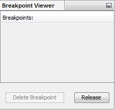

This window shows all breakpoints where the simulation will stop.
A Breakpoint marks the state at which the simulation stops if it runs. Breakpoints are added via a click on the corresponding line number in the Editor Window or via the context menu of the Editor Window. They can be deleted from within the Breakpoint Viewer using the Delete Breakpoint Button, the context menu of the Editor Window and by clicking next to the marked line in the Editor Window.
Delete Breakpoint deletes the selected breakpoint.
Release releases the highlighting of the corresponding breakpoint.